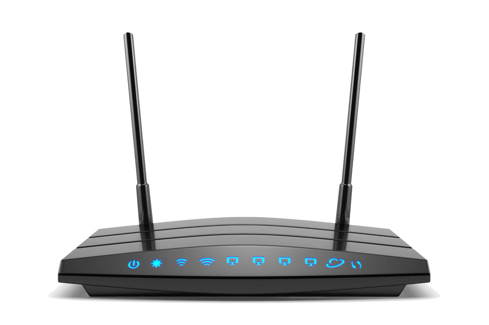

Комунікаційне або мережеве обладнання – це периферійні пристрої, що здійснюють перетворення сигналів, які використовують у комп'ютері, на сигнали, що передаються через лінії зв'язку, і навпаки. Такими пристроями є модеми та мережеві адаптери. Модеми застосовують при використанні телефонних ліній зв'язку, мережеві адаптери – при використанні інших ліній.


Лінія зв'язку – це обладнання, за допомогою якого здійснюється об'єднання комп'ютерів у мережу.
Мережева інтерфейсна плата (або мережевий адаптер) – спеціальний апаратний засіб для ефективної взаємодії персональних комп'ютерів у мережі. Вона встановлюється в одне з вільних гнізд розширення шини комп'ютера, а кабель передавання даних під'єднується до роз'єму на цій платі.
Лінії зв'язку, що використовують кабелі для передавання сигналів, називаються дротовими, решта – бездротовими.
Телефонна лінія – приклад дротової лінії зв'язку. Системи супутникового зв'язку – бездротові.
Лінії зв'язку різні за складністю. Часто для з'єднання локально розташованих комп'ютерів використовується радіозв'язок. Для потужніших телекомунікацій використовується мікрохвильове або інфрачервоне випромінювання.
Комунікаційне або мережеве програмне забезпечення - це набір програм, що забезпечують роботу мережевого обладнання і обмін інформацією між комп'ютерами в мережі. Мережеве програмне забезпечення поділяють на дві групи програм. Перші працюють з мережею на так званому низькому рівні. Ці програми забезпечують управління мережевим обладнанням з метою перетворення сигналів з одного виду у інший. Програми другої групи працюють з мережею на високому рівні, вони призначені для розпізнавання та опрацювання інформації залежно від її характеру та способу організації.
Усі комп'ютерні мережі поділяють на три групи - локальні, корпоративні і глобальні мережі.
Створення комп'ютерних мереж було обумовлено прагненням до економії ресурсів.
Економія досягається кількома шляхами:
Комп'ютерна мережа забезпечує:
Більше інформації у розділах: